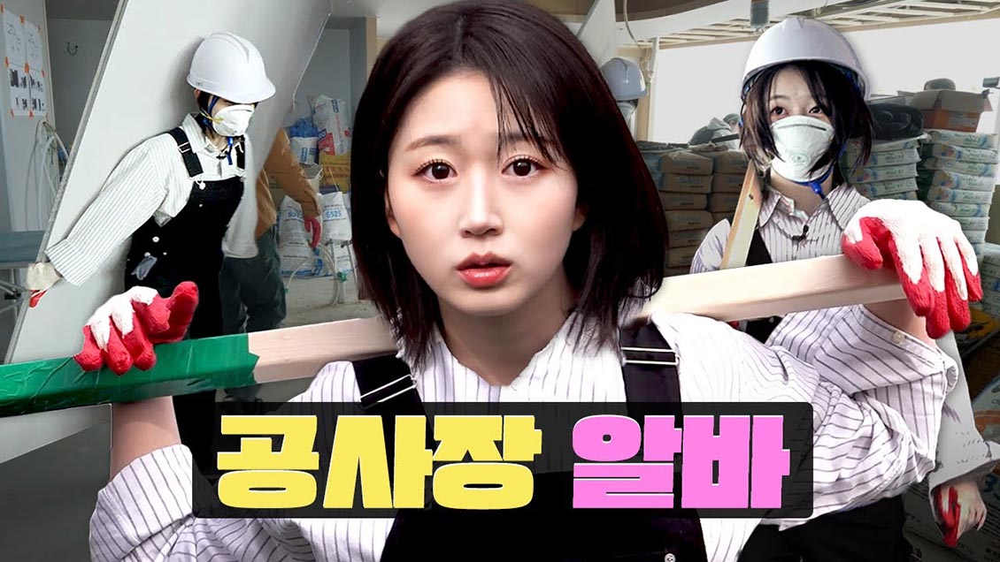
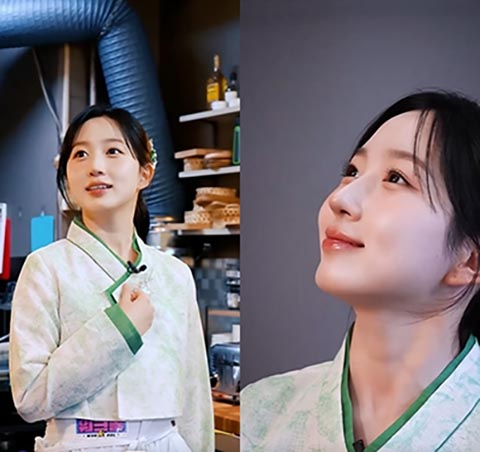

대한민국의 유튜브 웹예능 프로그램. 매주 목요일 오후 7시에 공개된다. 워크돌이라는 이름답게 게스트 역시 대부분 아이돌만 나온다.
워크돌-오해원
워크맨의 서브 콘텐츠다. "세상에 모든 JOB을 리뷰하는 K-POP 아이돌의 알바 체험기"로서 아이돌이 직접 여러 직업을 체험 해보는 것이 주된 내용이다. 프로그램 포맷은 워크맨과 동일하다.
인물정보
- 
-
오해원 : 대한민국의 가수. JYP엔터테인먼트 소속 6인조 걸그룹 NMIXX의 멤버이다. NMIXX의 리더를 맡고 있다. 자체 예능에서도 주로 진행, MC 담당이고, 엔믹스 고등학교 편에서도 임시 반장이었다. 쿨하고 털털한 성격으로, 분위기 메이커라고 한다. 청순한 외모와 상반되는 매력이라 팬들은 더 좋아한다. 닮은 캐릭터로는 농담곰, 치이카와, 시나모롤, 마루는 강쥐의 최마루가 있다.